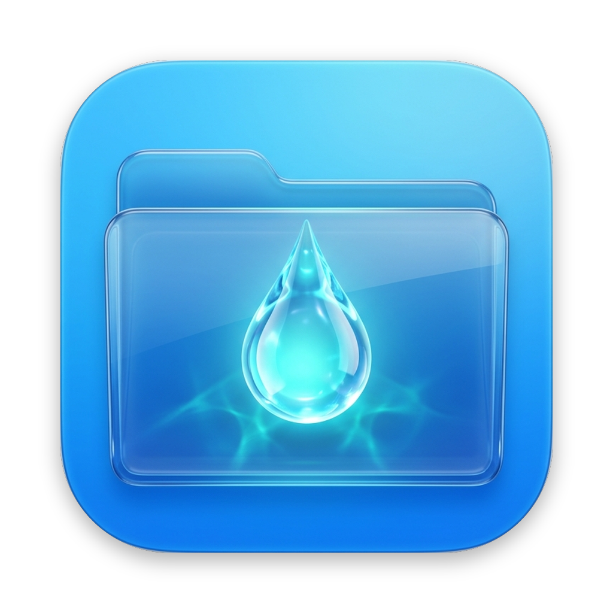

LocalDrop Server · 技术支持
查看常见问题，或直接通过电子邮件联系我们。
常见问题
以下信息可以帮助你快速排查。
应用会把我的文件上传吗？
服务器在你的 Mac 上运行，向连接设备提供你明确选中的共享文件夹。共享文件会传输给这些客户端。
如何联系支持？
请邮件说明应用和 macOS 版本、操作步骤及完整错误提示；不要附上密码或私人文件。
我可以在哪里了解数据处理？
应用主要在本机处理。详细信息请查看隐私政策。
隐私与数据处理
阅读各项信息处理方式、权限和你的选择。

LocalDrop Server查看常见问题，或直接通过电子邮件联系我们。
以下信息可以帮助你快速排查。
服务器在你的 Mac 上运行，向连接设备提供你明确选中的共享文件夹。共享文件会传输给这些客户端。
请邮件说明应用和 macOS 版本、操作步骤及完整错误提示；不要附上密码或私人文件。
应用主要在本机处理。详细信息请查看隐私政策。
阅读各项信息处理方式、权限和你的选择。